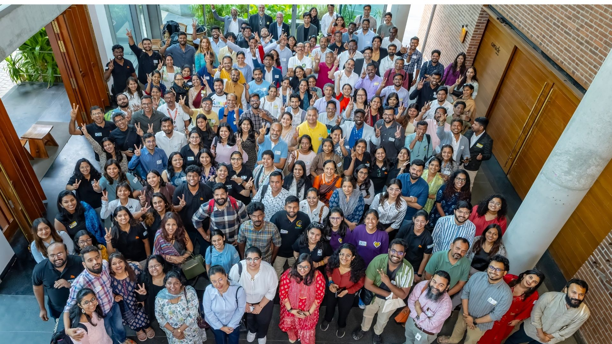

Built by the Movement, For the Movement
VolCon began with a simple but powerful belief: Volunteering deserves a space of its own.
A space not just to show up, but to learn, connect & shape the future of volunteering in India.
This vision first came alive when Bhumi and AID India joined hands to create a national platform dedicated entirely to volunteering. At a time when volunteer efforts were powerful but scattered, VolCon brought people together.
What began as an experiment soon became something much bigger. As the movement grew, so did the collective leadership behind it. iVolunteer joined as a co-organiser, strengthening the vision of VolCon as a platform owned not by one organisation, but by the ecosystem itself.
Since 2020, Bhumiversal has produced VolCon, helping scale its ambition and impact. Bringing together global insights, cross-sector collaboration, and deeper conversations on the future of volunteering. But the real turning point came in 2024 when the community itself stepped forward.
Today, VolCon stands as India’s flagship volunteering conference, where ideas spark action, partnerships are born, and volunteers discover their power to create change.
